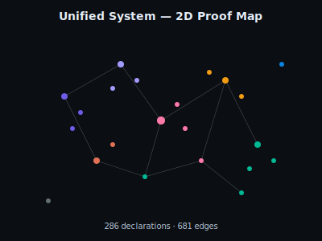
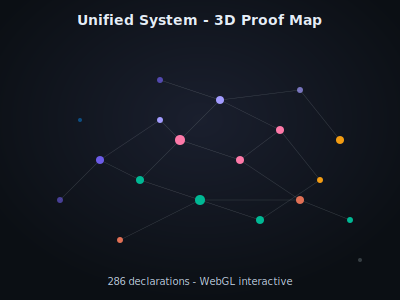

Unified System Visualizations
Interactive proof maps and architecture diagrams
Proof Maps
Explore the declaration structure in 2D and 3D. Each node is a theorem, lemma, or definition. Edges connect semantically similar declarations.

Pan, zoom, and search through 286 declarations.
286 nodes · 681 edges

Rotate and explore clusters in three dimensions.
Three.js · WebGL
Color Legend
Architecture
6-Layer Stack
The unified system connects four repositories through the nucleus as the universal algebraic structure:
- Semantic Layer: PrimaryAlgebra (Frame), Nucleus, Reentry, BoundaryHeyting
- LoF Kernel: Expr → BDD → MuxNet → GateSpec → AIG
- SKY Combinators: K/S/Y reductions, bracket abstraction, multiway
- Topos Layer: Sieves, Grothendieck topology, J.close nucleus
- Compilation: LambdaIR → MiniC → C
- Knowledge Layer: TensorLogic (boolean/f2/fuzzy/heyting modes)
Data
Raw declaration data with positions and edges (JSON format).
Part of the HeytingLean formal verification project.